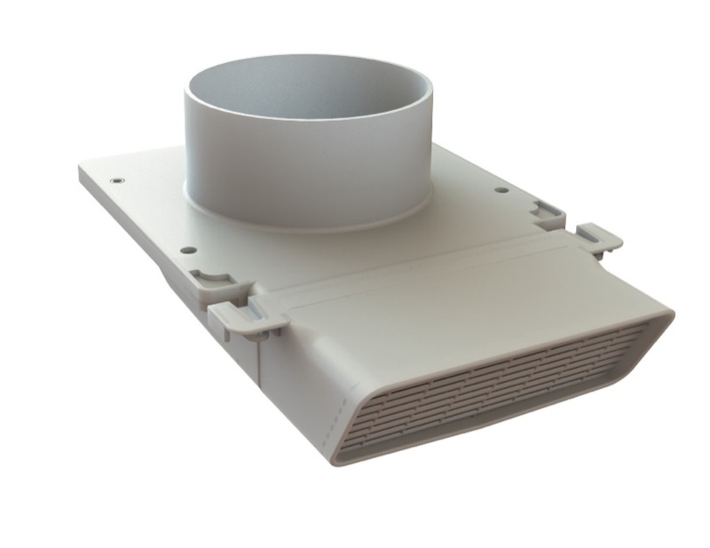
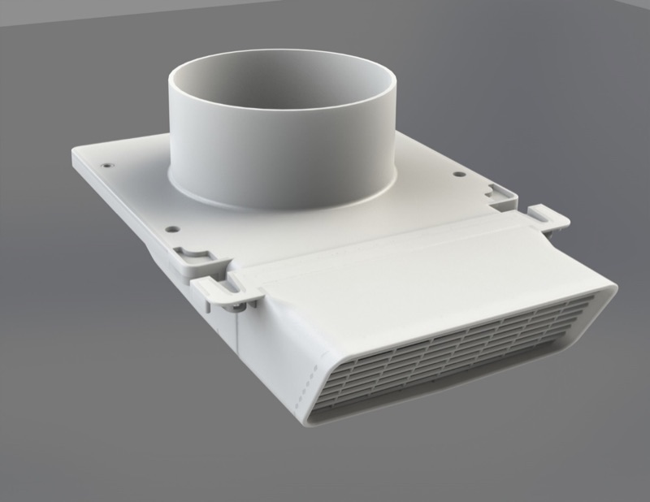

Every soffit vent sold in the US and Canada over the past 40 years vents exhaust air into the soffit, not through it. That passive moist air sits in the soffit's air intake and migrates into the attic, where it condenses and causes black mold and moisture damage. Venting through the roof instead avoids the soffit, but isn't recommended either — roof penetrations are difficult to install correctly and are a common source of new roof leaks.
The International Code Council (ICC) requires that all bathroom exhaust fans be vented to the exterior of a structure and not recirculated within the home (IRC Chapter 15, Section M1507.2) — but most installations still leave moist air trapped in the soffit.
An adapted termination that, for the first time, gives builders and homeowners the ability to vent a bathroom exhaust fan effectively.


Effective displacement of exhausted air, preventing it from re-entering the assembly
Multiple points of escape for bulk moisture, should condensation occur
Fits soffits ranging from 8″ to 48″ wide
Easy to install with a hole saw, screwdriver, 4½″ jubilee clamp, and a ladder
An independent, BPI-certified airflow test confirms PreVentIt outperforms a standard roof vent termination.
View test data & testimonials →